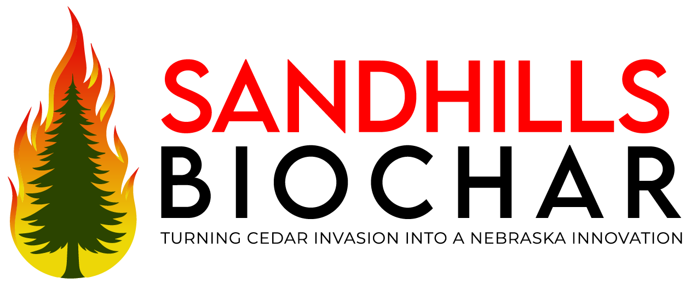

Biochar is a stable, carbon-rich material made by heating organic biomass such as wood, crop residue, or cedar trees in a low-oxygen environment through a process called pyrolysis. Instead of the material fully burning into ash, much of the carbon is captured and preserved in a charcoal-like form that can remain stable for hundreds to thousands of years.